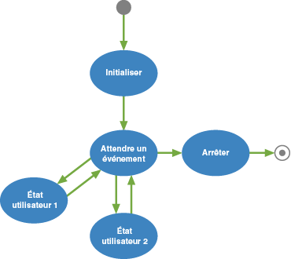
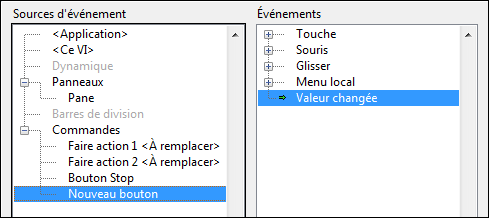
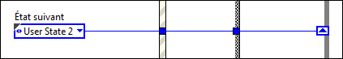
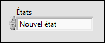
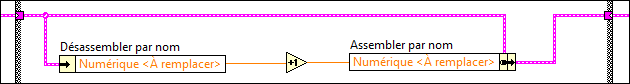
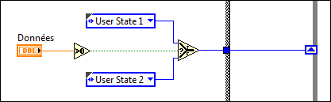

Machine à états simple
Le modèle Machine à états simple facilite la définition de la séquence d'exécution des sections du code. Cette implémentation spécifique, souvent appelée machine de Moore, détermine l'état suivant en fonction de décisions prises dans l'état actuel. La conception de ce modèle facilite l'insertion de nouvelles sections de code, la suppression de sections de code existantes ou le changement de l'ordre d'exécution des sections, le tout sans devoir modifier considérablement la structure de l'application.
Configuration système requise
Système de base, complet ou professionnel de LabVIEW
Cas d'usage
Ce modèle est bien adapté aux applications qui peuvent être décrites comme une combinaison des éléments suivants :
- États
- Logique décisionnelle qui détermine quand passer à un état particulier.
Par exemple, les applications suivantes peuvent bénéficier du modèle Machine à états :
- Boîtes de dialogue à une page ou à onglets. Chaque onglet de la boîte de dialogue correspond à un état. Un utilisateur initialise les transitions d'état en cliquant sur un onglet particulier. Les actions que l'utilisateur peut effectuer pour chaque état sont incluses dans l'état.
- Un distributeur automatique de billets (DAB). Les états de cette application peuvent inclure l'attente d'entrée utilisateur, la vérification du montant demandé par rapport au solde du compte, la distribution des billets, l'impression d'un reçu, etc.
- Une application qui relève une mesure, l'enregistre dans un fichier sur disque puis attend une autre action utilisateur. Les états de cette application peuvent inclure l'attente d'entrée utilisateur, le relevé de la mesure, l'enregistrement des données, l'affichage des données, etc.
Présentation
Remarques :
- Chaque état du diagramme représenté ci-dessus correspond à un sous-diagramme de la structure Condition du VI Main.vi. Chaque état :
- Effectue une action
- Indique à la machine à états quel est l'état suivant en passant une instruction à un registre à décalage de la boucle While.
- Une fois initialisée, la machine à états passe à l'état Attendre un événement. Cet état contient une structure Événement qui attend les changements sur la face-avant. Lorsque l'utilisateur clique sur un bouton, LabVIEW reconnaît l'événement et passe au sous-diagramme approprié de la structure Événement. Ce sous-diagramme initialise une transition vers l'état approprié.
- Chaque état a accès à un cluster de données. Les types de données de ce cluster sont définis dans Data.ctl.
- Les états valides sont répertoriés dans la définition de type State.ctl. L'utilisation d'une définition de type pour les transitions d'états limite les transitions que vous pouvez utiliser et par conséquent minimise le risque d'arriver dans un état non reconnu.
- Seul l'état Arrêt peut arrêter l'application. Cette conception évite les arrêts partiels et accidentels en assurant que :
- Le code d'arrêt ne s'exécute que lorsque l'utilisateur veut arrêter l'application.
- Le code d'arrêt s'exécute toujours jusqu'à la fin.
- Un seul état s'exécute à tout moment, et la boucle While unique garantit que toutes les tâches s'exécutent à la même fréquence. Si vous avez besoin de tâches multifréquences ou parallèles, envisagez d'utiliser plutôt les modèles Gestionnaire de messages dans une file d'attente ou Framework d'acteur, accessibles à partir de la boîte de dialogue Créer un projet.
- L'état Attendre un événement est le seul qui reconnaisse les entrées utilisateur. La machine à états doit être dans cet état pour que les entrées utilisateur soient acceptées.
Exécution de ce modèle
- Dans la fenêtre de l'Explorateur de projet, ouvrez et exécutez le VI Main.vi.
- Cliquez sur les commandes de la face-avant pour afficher différentes boîtes de dialogue.
Modification de ce modèle
Détermination de vos besoins
Avant de personnaliser ce modèle, posez-vous les questions suivantes :
- Quels états l'application comporte-t-elle ? La réponse détermine les états à ajouter.
- Quel doit être l'état suivant de chaque état ? La réponse détermine la valeur de l'énum État suivant envoyée par chaque état au registre à décalage de la boucle While.
Un seul état peut conditionnellement passer à plusieurs états. Un exemple est l'état Wait for Event du modèle, qui passe à un état en fonction de l'entrée utilisateur.
- Quel genre de données doit être accessible à chacun des états ? La réponse détermine quels types de données vous ajoutez à Data.ctl.
- Quelles erreurs pourraient se produire, et comment l'application devrait-elle répondre à ces erreurs ? Les réponses déterminent la quantité de gestion d'erreur nécessaire.
Ajout de code d'initialisation
Effectuez les étapes suivantes pour ajouter le code qui initialise votre application :
- Passez au sous-diagramme Initialize de la structure Condition.
- Ajoutez le code qui initialise votre application. Par exemple, vous pourriez vouloir ouvrir un fichier sur disque pour l'enregistrement, initialiser les données dans Data.ctl à des valeurs spécifiques, etc.
- Décidez à quel état l'application doit passer. Par défaut, l'état Initialize passe à l'état Wait for Event :

Selon les besoins de votre application, vous pouvez modifier ce code pour passer à un autre état.
Ajout d'une commande qui initialise une transition d'état
- Ajoutez une commande à la fenêtre de la face-avant.
- Passez au sous-diagramme Wait for Event de la structure Condition.
- Ajoutez une condition d'événement à la structure Événement.
- Configurez l'événement à déclencher lorsque la valeur de cette nouvelle commande change. Par exemple :

- Cliquez sur OK. LabVIEW crée un sous-diagramme dans la structure Événement.
- Faites glisser le terminal de la nouvelle commande dans ce sous-diagramme.
- Décidez à quel état vous voulez passer suite à l'action de l'utilisateur sur cette commande et câblez un énum avec la valeur de cet état au tunnel de sortie État suivant :

Si l'état auquel vous voulez passer n'existe pas, ajoutez-le.
Ajout d'un état
Effectuez les étapes suivantes pour ajouter un état :
- Mettez la définition de type qui contient les états valides, States.ctl, à jour :
- Recherchez l'énum States.ctl et ouvrez la définition de type :

LabVIEW affiche la fenêtre de l'Éditeur de commande.
- Ajoutez de l'espace pour le nouvel état dans l'énum États.
- Entrez le nom du nouvel état. Par exemple :

- Cliquez en dehors de la commande pour ajouter le nom à la liste d'états.
- Sélectionnez Fichier»Appliquer les modifications.
- Ajoutez l'état à la machine à états :
- Ajoutez un sous-diagramme à la structure Condition du VI Main.vi.
- Ajoutez le code que l'état exécutera. Prenez soin de respecter les règles suivantes :
- Utilisez les fonctions Désassembler par nom et Assembler par nom pour accéder aux données d'état et les modifier :

- Câblez les terminaux d'erreur de vos fonctions au registre à décalage d'erreur.
- Câblez une constante FAUX au tunnel de sortie de booléen. Seul l'état Stop peut arrêter la boucle.
- Chaque état doit spécifier un passage à un autre état. Câblez la valeur de l'état suivant au tunnel de sortie État suivant. Vous pouvez câblez directement ce terminal ou implémenter une logique conditionnelle. La figure suivante représente un exemple de ce genre de logique :

Dans le code représenté ci-dessus, si Données est supérieur à 0, User State 1 est l'état suivant. Sinon, User State 2 est l'état suivant. Pour implémenter une logique conditionnelle plus complexe, utilisez une structure Condition.
- Assurez-vous que l'application contient une transition vers le nouvel état.
Modification des types de données auxquels les états ont accès
Effectuez les étapes suivantes pour modifier les types de données auxquels les états ont accès :
- Recherchez l'énum Data.ctl et ouvrez la définition de type :

LabVIEW affiche la fenêtre de l'Éditeur de commande.
- Personnalisez la commande en fonction de vos besoins.
- Sélectionnez Fichier»Appliquer les modifications.
Ajout du code d'arrêt
Ajoutez du code d'arrêt dans le sous-diagramme Stop de la structure Condition : Comme ce sous-diagramme est le seul qui puisse arrêter l'application, vous pouvez être sûr que le code ajouté dans ce sous-diagramme s'exécutera avant l'arrêt de l'application et seulement à ce moment-là. Cette conception évite les arrêts accidentels et partiels.
En général, le code d'arrêt effectue les tâches suivantes :
- Il libère de la mémoire en fermant les références ouvertes.
- Il vide les buffers utilisés.
- Il écrit des valeurs sûres sur les voies d'entrée du matériel.
Ajout de gestion d'erreur
Par défaut, ce modèle s'arrête si une fonction renvoie une erreur sur son terminal sortie d'erreur. Vous voudrez peut-être ignorer certaines erreurs ou implémenter une gestion d'erreur plus intelligente. Effectuez les étapes suivantes pour ajouter la gestion des erreurs :
- Ajoutez un état Erreur.
- Dans l'état Erreur, créez le code qui gère les erreurs comme vous le voulez.
- Dans tous les autres états, passez à l'état Erreur lorsqu'une erreur a lieu. Par exemple :

Suppression de l'interface utilisateur
Si votre application n'a pas besoin d'interface utilisateur, vous pouvez effectuer les étapes suivantes pour supprimer cette interface :
- Supprimez toutes les commandes et tous les indicateurs de la face-avant.
- Supprimez le sous-diagramme Wait for Event de la structure Condition dans le VI Main.vi.
- Le cas échéant, corrigez les fils de liaison brisés.
Vous pouvez aussi supprimer la valeur Wait for Event de State.ctl. Cette étape assure que votre machine à états n'essaiera jamais de passer à l'état que vous venez de supprimer. Cependant, avant d'effectuer cette action, prenez note des énums qui appellent cet état dans votre application. Une fois la commande State.ctl enregistrée, ces énums changeront. Vérifiez que le nouvel état modifié correspond à ce que vous voulez.
Informations associées
Reportez-vous à l'Aide LabVIEW, disponible en sélectionnant Aide»Aide LabVIEW dans LabVIEW, pour obtenir des informations complémentaires sur les concepts et les objets LabVIEW utilisés dans ce modèle. Vous pouvez aussi utiliser la fenêtre d'Aide contextuelle pour prendre connaissance d'informations de base concernant les objets LabVIEW lorsque vous placez le curseur sur chaque objet. Pour afficher la fenêtre d'Aide contextuelle dans LabVIEW, sélectionnez Aide»Afficher l'aide contextuelle.
Reportez-vous à l'exemple de projet Mesure finie, disponible à partir de la boîte de dialogue Créer un projet, pour voir un exemple d'adaptation de ce modèle à une application de mesure.
Reportez-vous à ni.com pour voir une présentation de ce modèle.
Informations juridiques
Copyright
© 2016 National Instruments. Tous droits réservés.
Conformément à la réglementation applicable en matière de droits d'auteur, cette publication ne peut pas être reproduite ni transmise sous une forme quelconque, que ce soit par voie électronique ou mécanique, notamment par photocopie, enregistrement ou stockage dans un système permettant la récupération d'informations, ni traduite, en tout ou partie, sans le consentement préalable et écrit de National Instruments Corporation.
NI respecte les droits de propriété intellectuelle appartenant à des tiers et nous demandons aux utilisateurs de nos produits de les respecter également. Les logiciels NI sont protégés par la réglementation applicable en matière de droits d'auteur et de propriété intellectuelle. Lorsque des logiciels NI peuvent être utilisés pour reproduire des logiciels ou autre matériel appartenant à des tiers, vous ne pouvez utiliser les logiciels NI à cette fin que si cette reproduction est permise par les termes du contrat de licence applicable auxdits logiciels ou matériel et par la réglementation en vigueur.
Contrats de licence utilisateur final et notices juridiques de tiers
Vous trouverez les contrats de licence utilisateur final (CLUF) et notices juridiques de tiers aux emplacements suivants une fois l'installation terminée :
- Les notices se trouvent dans les répertoires <National Instruments>\_Legal Information et <National Instruments>.
- Les CLUF se trouvent dans le répertoire <National Instruments>\Shared\MDF\Legal\license.
- Consultez le fichier <National Instruments>\_Legal Information.txt pour en savoir plus sur la manière d'inclure des informations juridiques dans des installeurs construits avec des produits NI.
Droits restreints pour les entités gouvernementales américaines
Si vous faites partie d'une agence, d'un service ou de toute autre entité gouvernementale des États-Unis, l'utilisation, la duplication, la reproduction, la publication, la modification, la divulgation ou le transfert des données techniques figurant dans ce manuel sont réglementés par les clauses de Droits restreints mentionnées dans la Réglementation des Acquisitions Fédérales 52.227-14 ("Federal Acquisition Regulation 52.227-14") pour les agences fédérales et aux sections 252.227-7014 et 252.227-7015 du supplément à la Réglementation des Acquisitions Fédérales liées à la défense ("Defense Federal Acquisition Regulation Supplement") pour les agences militaires.
Avis sur le copyright de IVI Foundation
Content from the IVI specifications reproduced with permission from the IVI Foundation.
The IVI Foundation and its member companies make no warranty of any kind with regard to this material, including, but not limited to, the implied warranties of merchantability and fitness for a particular purpose. The IVI Foundation and its member companies shall not be liable for errors contained herein or for incidental or consequential damages in connection with the furnishing, performance, or use of this material.
Marques
Reportez-vous à la page NI Trademarks and Logo Guidelines sur ni.com/trademarks pour obtenir des informations sur les marques NI. Les autres noms de produits et de sociétés mentionnés aux présentes sont les marques ou les noms de leurs propriétaires respectifs.
Brevets
Pour la liste des brevets protégeant les produits/technologies NI, veuillez vous référer, selon le cas : à la rubrique Aide»Brevets de votre logiciel, au fichier patents.txt sur votre média, ou à National Instruments Patent Notice sur ni.com/patents.